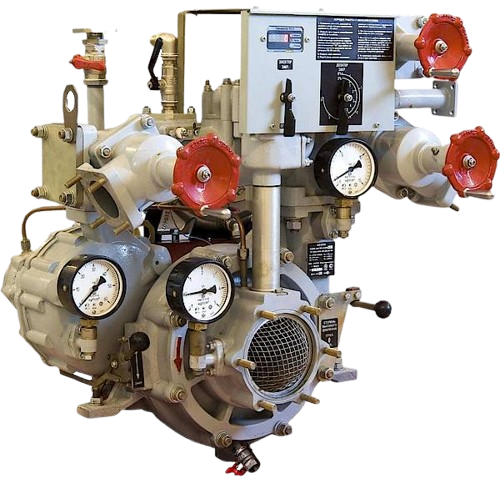
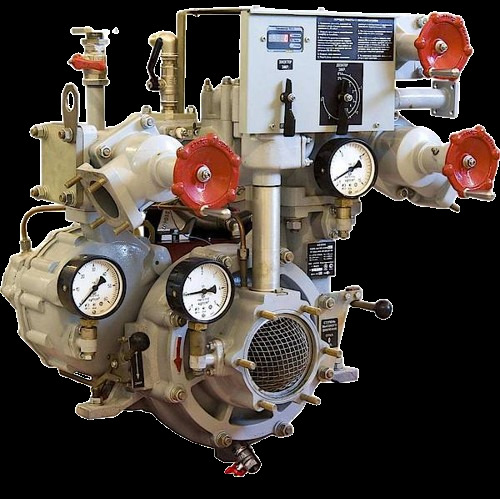

Исходник (.png 360kb) Из .png в .wepb (207kb):  Из .png в .jpeg (89kb):  Из .jpeg в .webp (64kb):
Взяв за исходник изобрвжение в формате PNG с размером файла 360kb с прозрачностью фона, и проконвертировав его в формат WEBP
наблюдается существенное уменьшение размера файла на 30% с сохранением прозрачности фона и несущественными потерями качества.
В то же время при конвертации исходного PNG в JPEG происходит сильное уменьшение размера на 75% до 89kb, но в силу неспособности сохранять прозрачность фона форматом JPEG,
данный эфект теряется. При конвертации полученного JPEG в WEBP так же осуществляется уменьшение размера файла на 28% до 64kb, естественно прозрачность фона отсутсвует.
Вывод: Формат WEBP можно использовать в качестве альтернативы популярных форматов изображения для создания сайтов с уменьшением размера файлов для более быстрой загрузки страниц и экономии трафика пользователей, без существенной потери качетсва изображения.